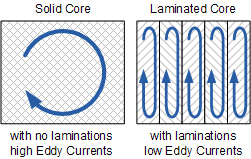

- If you are using a device with a small screen (e.g. Smartphone) please put it on landscape
- You may freely rotate the model by tapping it
- Note that the core is intentinally seperated to illustrate the seperate layers of iron
Please take some time to look at the model. Notice that the core contains thin slices of iron which are laminated, or in other words the thin sheets of iron which are glued together instead of being a solid block to reduce the Eddy currents (a form of core loss) inside the core.
The Core is laminated with pieces of iron that are shaped as E's and I's to reduce the high reluctance at the joints. Additionally this construction will also makes manufacturing the core much easier.
The bobbin acts as a permanent container for the wires to allow it to form the shape of the coil. It also provides a place to form a termination of the wires.